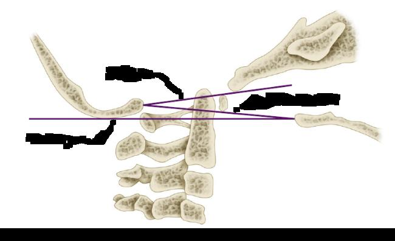

Manual de instruções · TARO 2026
Quatro peças parecidas, uma só encaixa. Questão real da prova.

???A linha traçada da base do palato duro até a borda posterior do forame magno foi descrita por
?Qual peça encaixa?Guarde a sua letra. O passo a passo vem no próximo story.
Passo a passo · linhas craniocervicais
As três linhas medem a mesma coisa: se o odontoide subiu demais (invaginação basilar). O que muda são os pontos.
Anormal se o odontoide passa mais de ~4,5 mm acima. A mais fácil de traçar.
É a abertura do forame magno. Não parte do palato. Odontoide acima dela é anormal.
Anormal se o odontoide passa mais de ~3 mm acima (conforme a referência). Qual é o nome dela?
Atenção: Ranawat não é linha. Mede a distância do pedículo de C2 ao eixo do arco de C1, na artrite reumatoide; menos de ~13 mm indica migração do odontoide.
Peça certa · gabarito
Palato duro até a borda posterior do forame magno (opístio).
Erro comum: trocar Chamberlain por McGregor. As duas saem do palato duro; a de Chamberlain termina no forame magno, a de McGregor no occipital.
Para a provaPalato duro até a borda posterior do forame magno = Chamberlain.
Questões do TARO e do TEOT, comentadas assim.ortoquestoes.com.bro caminho está no nosso perfil